第2章
受正比于速度平方的阻力作用的物体运动
命题5 定理3
如果一物体受到的阻力正比于其速度的平方，在均匀介质中运动时只受其惯性力的推动；按几何级数取时间值，并将各项由小到大排列；则每个时间间隔开始时的速度是由一个几何级数的倒数；而每个时间间隔内物体越过的距离相等。
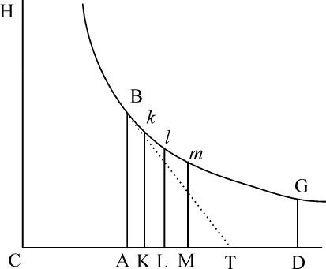
由于介质的阻力正比于速度的平方，而速度的减少正比于阻力：如果把时间分为无数相等间隔，则各间隔开始时速度的平方正比于相同速度的差。令这些时间间隔为直线CD上选取的AK，KL，LM等等，作垂线AB，Kk ，Ll ，Mm 等等，与以C为中心，以CD，CH为直角渐近线的双曲线Bklm G相交于B，k ，l ，m 等等；则AB比Kk 等于CK比CA，由相减法，AB－Kk 比Kk 等于AK比CA，交换之，AB－Kk 比AK等于Kk 比CA；所以等于AB·Kk 比AB·CA。所以既然AK和AB·CA是已知的，AB－Kk 正比于AB·Kk ；最后，当AB与Kk 重合时正比于AB2 。由类似理由，Kk －Ll ，Ll －Mm 等等都分别正比于Kk 2，Ll 2等等。所以线段AB，Kk ，Ll ，Mm 等等的平方正比于它们的差；所以，既然前面已证明速度的平方正比于它们的差，则这两个级数量是相似的。由此还可以推知这些线段掠过的面积与这些速度掠过的距离也是相似级数。所以，如果以线段AB表示第一个时间间隔AK开始时的速度，以线段Kk 表示第二个时间间隔KL开始时的速度，以面积AKk B表示第一个时间内掠过的长度，由以后的速度可以由以下线段Ll ，Mm 等等来表示，掠过的长度可以由面积Kl ，Lm 等等来表示。经过组合后，如果以AM表示全部时间，即各间隔总和，以AMm B表示全部长度，即其各部分之总和，设时间AM被分割为部分AK，KL，LM等等，使得CA，CK，CL，CM等按几何级数排列，则这些时间部分也按相同几何级数排列，而对应的速度AB，Kk ，Ll ，Mm 等等则按相同级数的倒数排列，而相应的空间Ak ，Kl ，Lm 等等都是相等的。
证毕。
推论Ⅰ．可以推知，如果以渐近线上任意部分AD表示时间，以纵坐标AB表示该时间开始时的速度，而以纵坐标DG表示结束的速度；以邻近的双曲线面积ABGD表示掠过的全部距离；则任意物体在相同时间里以初速度AB通过无阻力介质的距离，可以由乘积AB·AD表示。
推论Ⅱ．由此，可以求出在阻抗介质中掠过的距离，方法是它与物体在无阻力介质中以均匀速度AB掠过的距离的比，等于双曲线面积ABGD比乘积AB·AD。
推论Ⅲ．也可以求出介质的阻力。在运动刚开始时，它等于一个均匀向心力，该力可以使一个物体在无阻力介质中的时间AC内获得下落速度AB。因为如果作BT与双曲线相切于B，与渐近线相交于T，则直线AT等于AC，它表示该均匀分布的阻力完成抵消速度AB所需的时间。
推论Ⅳ．由此还可以求出该阻力与重力或其他任何已知向心力的比例。
推论Ⅴ．反之，如果已知该阻力与任何已知向心力的比值，则可以求出时间AC，在该时间内与阻力相等的向心力可以产生正比于AB的速度；由此也可以求出点B，通过它可以画出以CH，CD为渐近线的双曲线；还可以求出距离ABGD，它是物体以开始运动时的速度AB在任意时间AD内掠过均匀阻力介质的距离。
命题6 定理4
均匀而相等的球体受到正比于速度平方的阻力，在惯性力的推动下运动，它们在反比于初始速度的时间内掠过相同的距离，而失去的速度部分正比于总速度。
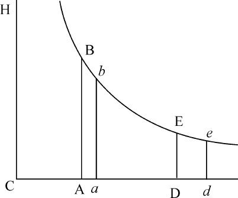
以CD，CH为直角渐近线作任意双曲线Bb Ee ，与垂线AB，ab ，DE，de 相交于B，b ，E，e ；令垂线AB，DE表示初速度，线段Aa ，Dd 表示时间。因而（由假设）Aa 比Dd 等于DE比AB，也（由双曲线性质）等于CA比CD；经过组合知，等于Ca 比Cd 。所以，面积ABba ，DEed ，即掠过的距离，相互间相等，而初速度AB，DE正比于末速度ab ，de ；所以，由相减法，正比于速度所失去的部分AB－ab ，DE－de 。
证毕。
命题7 定理5
如果球体的阻力正比于速度的平方，则在正比于初速度反比于初始阻力的距离内，它们失去的运动正比于其全部，而掠过的距离正比于该时间与初速度的乘积。
因为运动所失去的部分正比于阻力与时间的乘积，所以该部分应正比于全部，阻力与应正比于运动的时间的乘积，所以时间正比于运动反比于阻力。所以在以该比值选取的时间间隔内，物体所失去的运动部分总是正比于其全部，因而余下的速度也总正比于初速度。因为速度的比值是给定的，它们所掠过的距离正比于初速度与时间的乘积。
证毕。
推论Ⅰ．如果速度相同的物体其阻力正比于直径的平方，不论均匀球体以什么样的速度运动，在掠过正比于其直径的距离后，所失去的运动部分都正比于其全部。因为每个球的运动都正比于其速度与质量的乘积，即正比于速度与其直径立方的乘积；阻力（由命题）则正比于直径的平方与速度的平方的乘积；而时间（由命题）与前者成正比，与后者成反比；所以，正比于时间与速度的距离也正比于直径。
推论Ⅱ．如果速度相同的物体的阻力正比于其直径的3/2次幂，则以任意速度运动的均匀球体在掠过正比于其直径3/2次幂的距离后，所失去的运动部分正比于其全部。
推论Ⅲ．一般而言，如果速度相同的物体受到的阻力正比于直径的任意次幂，则以任意速度运动的均匀球体，在失去其运动的部分正比于总运动量时，所掠过的距离正比于直径的立方除以该幂。令球体直径为D和E；如果在速度相等时阻力正比于D n 和E n ，则球体以任意速度运动并失去其运动的部分正比于全部时，所掠过的距离正比于D3－ n 和E3－ n ，而所余下的速度相互间的比值等于开始时的比值。
推论Ⅳ．如果球是不均匀的，较密的球所掠过的距离的增加正比于密度。因为在相等速度下，运动正比于密度，而时间（由命题）也正比于运动增加，所掠过的距离则正比于时间。
推论Ⅴ．如果球在不同的介质中运动，在其他条件相同时，在阻力较大的介质中，距离正比于该较大阻力减小。因为时间（由命题）的减少正比于增加的阻力，而距离正比于时间。
引理2
任一生成量（genitum）的瞬（moment）等于各生成边（generating sides）的瞬乘以这些边的幂指数，再乘以它们的系数，然后再求总和。
我称之为生成量的任意量，不是由若干分立部分相加或相减形成的，而是在算术上由若干项通过相乘、相除或求方根产生或获得的；在几何上则由求容积和边，或求比例外项和比例中项形成。这类量包括有乘积，商，根，长方形，正方形，立方体，边的平方和立方以及类似的量。在此，我把这些量看做是变化的和不确定的，可随连续的运动或流动增大或减小；所谓瞬，即指它们的瞬时增减；可以认为，呈增加时瞬为正值，呈减少时瞬为负值。但应注意这不包括有限小量。有限小量不是瞬，却正是瞬所产生的量。我们应把它们看做是有限的量所刚刚新生出的份额。在此引理中我们也不应将瞬的大小，而只应将瞬的初始比，看做是新生的。如果不用瞬，则可以用增加或减少（也可以称做量的运动、变化和流动）的速率，或相应于这些速率的有限量来代替，效果相同。所谓生成边的系数，指的是生成量除以该生成边所得到的量。
因此，本引理的含义是，如果任意量A，B，C等等由于连续的流动而增大或减小，而它们的瞬或与它们相应的变化率以a ，b ，c 来表示，则生成量AB的瞬或变化等于a B＋b A；乘积ABC的瞬等于a BC＋b AC＋c AB；而这些变量所产生的幂
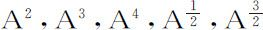
，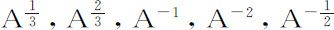
的瞬分别为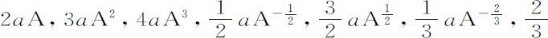
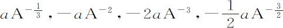
；一般地，任意幂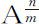
的瞬为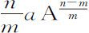
。生成量A2 B的瞬为2a AB＋b A2 ；生成量A3 B4 C2 的瞬为3a A2 B4 C2 ＋4b A3 B3 C2 ＋2c A3 B4 C；生成量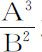
或A3 B－2 的瞬为3a A2 B－2 －2b A3 B－3 ；以此类推。本引理可以这样证明：情形1．任一长方形，如AB，由于连续的流动而增大，当边A和B尚缺少其瞬的一半
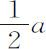
和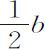
时，等于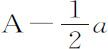
乘以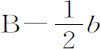
，或者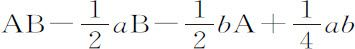
；而当边A和B长出半个瞬时，乘积变为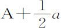
乘以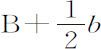
，或者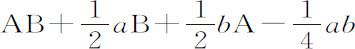
。将此乘积减去前一个乘积，余下差a B＋b A。所以当变量增加a 和b 时，乘积增加a B＋b A。证毕。
情形2．设AB恒等于G，则容积ABC或CG（由情形1）的瞬为g C＋c G，即（以AB和a B＋b A代替G和g ），a BC＋b AC＋c AB。不论乘积有多少变量，瞬的求法与此相同。
证毕。
情形3．设变量A，B和C恒相等；则A2 ，即乘积AB的瞬a B＋b A变为2a A；而A3 ，即容积ABC的瞬a BC＋b AC＋c AB变为3a A2 。同样地，任意幂A n 的瞬是na A n －1 。
证毕。
情形4．由于
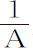
乘以A是1，则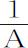
的瞬乘以A，再加上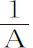
乘以a ，就是1的瞬，即等于零。所以，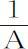
，或A－1 的瞬是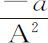
。一般地，由于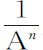
乘A n 等于1，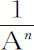
的瞬乘以A n 再加上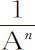
乘以na A n －1 等于零。所以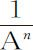
或A－ n 的瞬是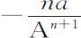
。证毕。
情形5．由于
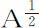
乘以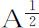
等于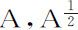
的瞬乘以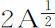
等于a （由情形3）；所以，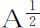
的瞬等于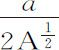
或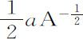
。推而广之，令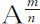
等于B，则A m 等于B n ，所以ma A m －1 等于nb B n －1 ，ma A－1 等于nb B－1 ，或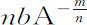
；所以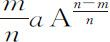
等于b ，即等于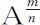
的瞬。证毕。
情形6．所以，生成量A m B n 的瞬等于A m 的瞬乘以B n ，再加上B n 的瞬乘以A m ，即ma A m －1 B n ＋nb B n －1 A m ；不论幂指数m 和n 是整数还是分数，是正数还是负数，对于更高次幂也是如此。
证毕。
推论Ⅰ．对于连续正比的量，如果其中一项已知，则其余项的变化率正比于该项乘以该项与已知项间隔项数。令A，B，C，D，E，F连续正比；如果C为已知，则其余各项的瞬之间的比为－2A，－B，D，2E，3F。
推论Ⅱ．如果在四个正比量里两个中项为已知，则端项的变化率正比于该端项。这同样适用于已知乘积的变量。
推论Ⅲ．如果已知两个平方的和或差，则变量的瞬反比于该变量。
附注
我在1672年12月10日致科林斯（J．Collins） (1) 先生的信中，曾谈到一种切线方法，我猜测它与司罗斯（Sluse） (2) 当时尚未发表的方法是相同的，这封信中说：
这是一种普适方法的特例或更是一种推论，它不仅可以毫不困难地推广到求作无论是几何的还是力学的曲线的切线，或与直线及其他曲线有关的方法中，还可用于解决有关曲率、面积、长度、曲线的重心等困难问题；它还不（像许德 (3) 的求极大值与极小值方法那样）仅限于不含不尽根量的方程，把我的方法和这种方法联合运用于求解方程，可将它们化简为无限极数。
以上是那封信中的一段话。其中最后几句是针对我在1671年写成的一篇关于这项专题研究的论文的。这个普适方法的基础已包含在上述引理中。
命题8 定理6
如果均匀介质中的物体在重力的均匀作用下沿一条直线上升或下落；将它所掠过的全部距离分为若干相等部分，并将各部分起点（根据物体上升或下落，在重力中加上或减去阻力）与绝对力对应起来：则这些绝对力组成几何级数。
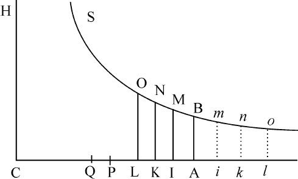
令已知线段AC表示重力；不定线段AK表示阻力；二者的差KC表示下落物体的绝对力；线段AP表示物体速度，它是AK和AC的比例中项，因而正比于阻力的平方根，短线段KL表示给定时间间隔中阻力的增量，而短线段PQ表示速度的瞬时增量；以C为中心，以CA，CH为直角渐近线，作双曲线BNS与垂线AB，KN，LO相交于B，N和O。因为AK正比于AP2 ，其中一个的瞬KL正比于另一个的瞬2AP·PQ，即，正比于AP·KG；因为速度的增量PQ（由定律Ⅱ）正比于产生它的力KC。将KL的比值乘以KN的比值，则乘积KL·KN正比于AP·KC·KN；即（因为乘积KC·KN已知），正比于AP，但双曲线KNOL的面积与矩形KL·KN的最后比值，在点K与L重合时，变为相等比值。所以，双曲线趋于零的面积正比于AP。所以整个双曲线面积ABOL由总是正比于速度AP的间隔组成；因而它本身也正比于速度掠过的距离。现将该距离分为若干相等部分ABMI，IMNK，KNOL等等，则对应的绝对力AC，IC，KC，LC等等构成几何级数。
证毕。
由类似理由，在物体的上升中，在点A的另一侧取相等面积ABmi，imnk，knol等等，则可以推知绝对力AC，i C，k C，l C等连续正比。所以如果整个上升和下降距离分为相等部分，则所有的绝对力l C，k C，i C，AC，IC，KC，LC等等构成连续正比。
证毕。
推论Ⅰ．如果以双曲线面积ABNK表示掠过的距离，则重力物体的速度和介质的阻力，可以分别用线段AC，AP和AK表示；反之亦然。
推论Ⅱ．物体在无限下落中所能达到的最大速度可以线段AC表示。
推论Ⅲ．如果对应于已知速度的介质阻力为已知，则可以求出最大速度。方法是令它比该已知速度等于重力比该已知阻力的平方根。
命题9 定理7
在相同条件下，如果取圆与双曲线张角的正切正比于速度，再取一适当大小的半径，则物体上升到最高处所的总时间正比于圆的扇形，而由最高处下落的总时间正比于双曲线的扇形。
在表示重力的直线AC上作与之相等的垂线AD，以D为圆心，AD为半径作一个四分之一圆At E，再作直角双曲线AVZ，其轴为AK，顶点为A，渐近线为DC。作Dp ，Dp ；则圆扇形At D正比于上升到最高处所的总时间；而双曲线扇形ATD则正比于由该最高处下落的总时间；如果这成立，则切线Ap ，AP正比于速度。
情形1．作Dvq 在扇形ADt 和三角形ADp 上切下变化率或同时掠过的小间隔t Dv 和q Dp 。由于这些间隔（因为属于共同角D）正比于边的平方，间隔t Dv 正比于
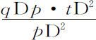
，即（因为t D已知），正比于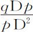
。但p D2 等于AD2 ＋Ap 2 ，即，AD2 ＋AD·Ak ，或者AD·Ck ；而q Dp 等于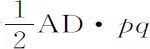
。所以扇形间隔t Dv 正比于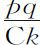
；即正比于速度的减小量pq ，反比于减慢速度的力Ck ；所以正比于对应于速度减量的时间间隔。通过组合，在扇形ADt 中所有间隔t Dv 的总和正比于对应于不断变慢的速度Ap 所失去的每一个小间隔pq 的时间间隔的总和，直到该趋于零的速度消失；即，整个扇形ADt 正比于上升到最高处所的时间。证毕。
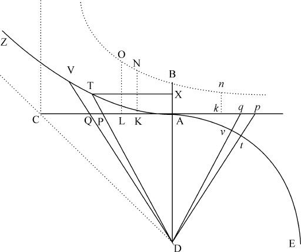
情形2．作DQV在扇形DAV和三角形DAQ上割下小间隔TDV和PDQ；这两个小间隔相互间的比等于DT2 比DP2 ，即（如果TX与AP平行）等于DX2 比DA2 或TX2 比AP2 ；由相减法，等于DX2 －TX2 比DA2 －AP2 ，但由双曲线性质知，DX2 －TX2 等于AD2 ；而由命题所设条件，AP2 等于AD·AK。所以二间隔相互间的比等于AD2 比AD2 －AD·AK；即等于AD比AD－AK或AC比CK；所以扇形的间隔TDV等于
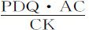
；所以（因为AC与AD已知）等于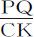
；即，正比于速度的增量，反比于产生该增量的力；所以正比于对应于该增量的时间间隔。通过组合知，使速度AP产生全部增加量PQ的总时间间隔，正比于扇形ATD的间隔；即总时间正比于整个扇形。证毕。
推论Ⅰ．如果AB等于AC的四分之一部分，则在任意时间内物体下落所掠过的距离，比物体以其最大速度AC在同一时间内匀速运动所掠过的距离，等于表示下落掠过的距离的面积ABNK比表示时间的面积ATD。因为
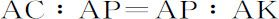
由本编引理2推论I，
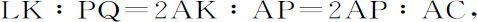
所以
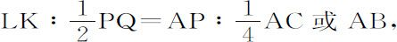
而由于
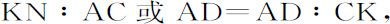
将对应项相乘，
如上所述，
所以，
即，等于落体速度比它在下落中所能获得的最大速度。所以，由于面积ABNK和ATD的变化率LKNO和DTV正比于速度，在同一时间里产生的这些面积的所有部分正比于同一时间里掠过的距离；所以自下落开始后产生的整个面积ABNK和ADT，正比于下落的全部距离。
证毕。
推论Ⅱ．物体上升所掠过的距离情况相同，也就是说，总距离比同一时间中以均匀速度AC掠过的距离，等于面积ABn K比扇形ADt 。
推论Ⅲ．物体在时间ATD内下落的速度，比它同一时间里在无阻力空间中所可能获得的速度，等于三角形APD比双曲线扇形ATD。因为在无阻力介质中速度正比于时间ATD，而在有阻力介质中正比于AP，即正比于三角形APD。而在刚开始下落时，这些速度与面积ATD，APD一样，都是相等的。
推论Ⅳ．由同样理由，上升速度比物体相同时间里在无阻力空间中所损失的上升运动，等于三角形Ap D比圆扇形At D；或等于直线Ap 比弧At 。
推论Ⅴ．所以，物体在有阻力介质中下落所获得的速度AP，比它在无阻力空间中下落获得最大速度AC所需时间，等于扇形ADT比三角形ADC；而物体在无阻力介质中由于上升而失去速度Ap 的时间，比它在有阻力介质中上升失去相同速度所需时间，等于弧At 比切线Ap 。
推论Ⅵ．由已知时间可以求出上升或下落的距离。因为物体无限下落的最大速度是已知的（由本编定理6推论Ⅱ和Ⅲ）；因而也可以求出物体在无阻力空间中下落获得这一速度所需要的时间。取扇形ADT或ADt 比三角形ADC等于已知时间比刚求出的时间，即可以求出速度AP或Ap ，以及面积ABNK或ABnk ，它与扇形ADT或ADt 的比等于所求距离与前面求出的在已知时间内以最大速度匀速运动掠过的距离的比。
推论Ⅶ．采用反向推导，由已知上升或下落的距离ABnk 或ABNK，可以求出时间ADt 或ADT。
命题10 问题3
设均匀重力垂直指向地平面，阻力正比于介质密度与速度平方的乘积：求使物体沿任意给定曲线运动的各点介质密度，以及物体的速度，和各点的介质阻力。
令PQ为与纸平面垂直的平面；PFHQ为一曲线，与该平面相交于点P和Q；物体沿此曲线由F到Q经过四个点G，H，I，K；GB，HC，ID，KE是由这四点向地平面作的四条平行纵坐标，落向地平线PQ上的垂点B，C，D，E；令纵坐标间距BC，CD，DE相等。由点G和H作直线GL，HN与曲线相切于点G，H，并与纵坐标向上的延长线CH，DI相交于L和N；作出平行四边形HCDM。则物体掠过弧GH，HI的时间，正比于物体在该时间里由切点下落的高度LH，NI的平方根；而速度正比于掠过的长度GH，HI，反比于时间。令T和t
表示时间，
和
表示速度，则时间t
内速度的减量为
。该减量是由阻碍物体的阻力和对它加速的重力所产生的。伽利略曾证明过，掠过距离NI的落体所受重力产生的速度，可以使它在相同时间里掠过二倍的距离；即，速度
：但如果物体掠过的是弧HI，这个力只使弧增加长度HI－HN，或者
；所以产生速度
。将这一速度加上前述减量，就可以得阻力单独产生的速度减量，即
。由于在同一时间里重力使落体产生速度 ，则阻力比重力等于
，则阻力比重力等于
现设横坐标CB，CD，CE为－o ，o ，2o ，纵坐标CH为P；MI为任意级数Qo ＋Ro 2 ＋So 2 ＋等等。则级数中第一项以后的所有项，即Ro 2 ＋So 2 ＋等等，等于NI；而纵坐标DI，EK和BG则分别为P－Qo －Ro 2 －So 3 －等等。P－2Qo －4Ro 2 －8So 3 －等等，以及P＋Qo －Ro 2 ＋So 3 －等等。取纵坐标的差BG－CH与CH－DI的平方，再加上BC与CD的平方，即得到弧GH，HI的平方oo ＋QQoo －2QRo 3 ＋等等以及oo ＋QQoo ＋2QRo 3 ＋等等，它们的根 与 就是弧GH和HI。而且，如果由纵坐标CH中减去纵坐标BG与DI的和的一半，由纵坐标DI中减去纵坐标CH与EK的和的一半，则余下Roo 与Roo ＋3So 3 ，这是弧GI和HK的正矢。它们正比于短线段LH和NI，因而正比于无限小时间T和t 的平方：因而比值 正比于 或 的平方变化；在 中代入刚才求出的 ，GH，HI，MI和NI的值，得到 。由于2NI等于2Roo ，则阻力比重力等于 比2Roo ，即等于 。
速度等于一物体自任意处所H沿切线HN方向在真空中画出抛物线的速度，该抛物线的直径为HC，通径为 或 。
阻力正比于介质密度与速度平方的乘积；因而介质密度正比于阻力，反比于速度平方；即，正比于 ，反比于 ；即正比于 。
完毕。
推论Ⅰ．如果将切线HN向两边延长，使它与任意纵坐标AF相交于T，则 等于 ，因而由上述推导知可以替代 。由此，阻力比重力等于3S·HT比4RR·AC；速度正比于 ，介质密度正比于 。
推论Ⅱ．由此，如果像通常那样曲线PFHQ由底或横坐标AC与纵坐标CH的关系来决定，纵坐标的值分解为收敛级数，则本问题可利用级数的前几项简单地解决；如下例所示。
例1．令PFHQ为直径PQ上的半圆，求使抛体沿此曲线运动的介质密度。
在A二等分直径PQ，并令AQ为n ；AC为a ；CH为e ；CD为o ；则DI2 或AQ2 －AD2 ＝nn －aa －2ao －oo ，或ee －2ao －oo ；用我们的方法求出根，得到
在此取nn 等于ee ＋aa ，则
在此级数中我用这一方法区分不同的项：不含无限小o 的项为第一项；含该量一次方的为第二项，含二次方的为第三项，三次方的为第四项；以此类推以至无限。其第一项在这里是e ，总是表示位于不确定量o 的起点的纵坐标CH的长度，第二项是 ，表示CH与DN的差，被平行四边形HCDM切下的短线段MN；因而总是决定着切线HN的位置；在此，方法是取 。第三项是 ，表示位于切线与曲线之间的短线段IN；它决定切角IHN，或曲线在H的曲率。如果该短线段IN有确定量，则它由第三项与其以后无限多个项决定。但如果该短线段无限缩短，则以后的项比第三项为无限小，可以略去。第四项决定曲率的变化；第五项是该变化的变化，等等。顺便指出，由此我们得到了一种不容轻视的方法，利用这一级数可以求解曲线的切线和曲率问题。
现在，将级数
与级数
作一比较，以 和 代替P，Q，R和S，以 或 代替 ；则得到介质和密度正比于 ；即（因为n 为已知），正比于 或 ，即，正比于切线HT的长度，它由PQ上的垂直半径截得；而阻力比重力等于3a 比2n ，即，等于3AC比圆的直径PQ；速度则正比于 。所以，如果物体自处所F以一适当速度沿平行于PQ的直线运动，介质中各点H的密度正比于切线HT的长度，且注意点H处的阻力比重力等于3AC比PQ，则物体将画出圆的四分之一FHQ。
完毕。
但如果同一物体由处所P沿垂直于PQ的直线运动，且在开始时沿着半圆PFQ的弧，则必须在圆心A的另一侧选取AC或a ；所以它的符号也应改变，以－a 代替＋a 。对应的介质密度正比于 。但自然界中不存在负密度，即，使物体运动加速的密度；所以，不可能使物体自动由P上升画出圆的四分之一PF，要获得这一效应，物体应能在推动的介质中而不是在有阻力的介质中，得到加速。
例2．令曲线PFQ为抛物线，其轴垂直于地平线PQ；求使抛体沿该曲线运动的介质密度。
由抛物线性质，乘积－PQ·DQ等于纵坐标DI与某个已知直线的乘积；即，如果该直线是b ，而PC为a ；PQ为c ；CH为e ；CD为o ；则乘积
所以， 。现在，以该级数中第二项 代替Qo ，以第三项 代替Roo 。但由于没有更多的项，第四项的系数S是零；所以，介质的密度所正比的量 是零。所以，在介质密度为零的地方，抛体沿抛物线运动。这正是伽利略所证明了的。
完毕。
例3．令曲线AGK为双曲线，其渐近线NX垂直于地平面AK：求使抛体沿此曲线运动的介质密度。
令MX为另一条渐近线，与纵坐标DG的延长线相交于V；由双曲线性质，XV与VG的乘积是已知的，DN与VX的比值也是已知的，所以DN与VG的乘积也为已知。令该乘积为bb ；作平等四边形DNXZ，令BN为a ；BD为o ；NX为c ；令已知比值VZ比ZX或DN为 ，则DN等于a －o ，VG等于 ，VZ等于 ，而GD或NX－VZ－VG等于
把项 分解为收敛级数
则GD等于
该级数第二项 就是Qo ；第三项 改变符号就是Ro 2 ；第四项 ，改变符号就是So 3 ，它们的系数 和 就是前述规则中的Q，R和S，完成这一步后，得到介质的密度正比于
或者
即，如果在VZ上取VY等于VG，则正比于 ，因为aa 与 是XZ和ZY的平方。但阻力与重力的比值等于3XY与2YG的比值；而速度则等于可使该物体画出一抛物体的速度，其顶点为G，直径为DG，通径为 。所以，设介质中各点G的密度反比于距离XY，而且任意点G的阻力比重力等于3XY比2YG；当物体由点A出发以适当速度运动时，将画出双曲线AGK。
完毕。
例4．设AGK是一条双曲线，其中心为X，渐近线为MX，NX，使得画出矩形XZDN后，其边ZD与双曲线相交于G，与渐近线相交于V，VG反比于线段ZX或DN的任意次幂DN n ，幂指数为n ：求使抛体沿此曲线运动的介质密度。
分别以A，O，C代替BN，BD，NX，令VZ比XZ或DN等于d 比e ，且VG等于 ；则DN等于 或 等于
将项 分解为无限级数
则GD等于
该级数的第二项 就是Qo ，第三项 是Roo ，第四项 bb O3 是So 3 ，因此在任意处所G介质的密度 等于
所以，如果VZ上取VY等于n ·VG，则密度正比于XY的倒数。因为A2 与 是XZ和ZY的平方。而同一处所G的介质阻力比重力等于 比4RR，即等于XY比 。速度则与使物体沿一条抛物线的相同，该抛物线顶点是G，直径为GD，通径为 或 。
完毕。
附注
由与推论Ⅰ相同的方法，可得出介质的密度正比于 ，如果阻力正比于速度V的任意次幂V n ，则介质密度正比于
所以，如果能求出一条曲线，使得 与 ，或 与 的比值为已知，则在阻力正比于速度V的任意次幂V n 的均匀介质中，物体将沿此曲线运动。现在还是让我们回到比较简单的曲线上来。
由于在无阻力介质中只存在抛物线运动，而这里所描述的双曲线运动是由连续阻力产生的；所以很明显抛体在均匀阻力介质中的轨道更近于双曲线而不是抛物线。这样的轨道曲线当然属于双曲线类型，但它的顶点距渐近线较远，而在远离顶点处较之这里所讨论的双曲线距渐近线更近。然而，其间的差别并不太大，在实用上可以足够方便地以后者代替前者，也许这些比双曲线更有用，虽然它更精确，但同时也更复杂。具体应用按下述方法进行。
作平行四边形XYGT，则直线GT将与双曲线相切于G，因而在G点介质密度反比于切线GT，速度正比于 ；阻力比重力等于 。
所以，如由处所A抛出的物体沿直线AH的方向画出双曲线AGK，延长AH与渐近线NX相交于H，作AI与它平行并与另一条渐近线MX相交于I；则A处介质密度反比于AH，物体速度正比于 ，阻力比重力等于AH比 。由此得出以下规则。
规则1．如果A点的介质密度以及抛出物体的速度保持不变，而角NAH改变；则长度AH，AI，HX不变。所以，如果在任何一种情况下求出这些长度，则由任意给定角NAH可以很容易求出双曲线。
规则2．如果角NAH，与A点的介质密度保持不变，抛出物体的速度改变，则长度AH维持不变；而AI则反比于速度的平方改变。
规则3．如果角NAH，物体在A点的速度以及加速引力保持不变，而A点的阻力与运动引力的比以任意比率增大；则AH与AI的比值也以相同比率增大；而上述抛物线的通径保持不变，与它成正比的长度 也不变；因而AH以同一比率减小，而AI则以该比率的平方减小。但当体积不变而比重减小，或当介质密度增大，或当体积减小，而阻力以比重量更小的比率减小时，阻力与重量的比增大。
规则4．因为在双曲线顶点附近的介质密度大于处所A的，所以要求平均密度，应先求出切线GT的最小值与切线AH的比值，而A点的密度的增加应大于这两条切线的和的一半与切线GT最小值的比值。
规则5．如果长度AH，AI已知，要画出图形AGK，则延长HN到X，使HX比AI等于n ＋1比1；以X为中心，MX，NX为渐近线，通过点A画出双曲线，使AI比任意直线VG等于XV n 比XI n 。
规则6．数n 越大，物体由A上升的双曲线就越精确，而向K下落的就越不精确；反之亦然。圆锥双曲线是这二者的平均，并比所有其他曲线都简单。所以，如果双曲线属于这一类，要找出抛体落在通过点A的任意直线上的点K，令AN延长与渐近线MX，NX相交于M，N，取NK等于AM。
规则7．由此现象得到一种求这条双曲线的简便方法。令两个相等物体以相同速度沿不同角度HAK，h Ak 抛出，落在地平面上的点K和k 处；记下AK与Ak 比值，令其为d 比e 。作任意长度的垂线AI，并任意设定长度AH或Ah ，然后用作图法，或使用直尺与指南针，收集AK，Ak 的长度（用规则6）。如果AK与Ak 的比值等于d 与e 比值，则AH长度选取正确。如果不相等，则在不定直线SM上取SM等于所设AH的长；作垂线MN等于二比值的差 再乘以任意已知直线。由类似方法，得到若干AH的假设长度，对应有不同的点N；通过所有这些点作规则曲线NNXN，与直线SMMM相交于X。最后，设AH等于横坐标SX，再由此找出长度AK；则这些长度比AI的假设长度，以及这最后假设的长度AH，等于实验测出的AK，比最后求得的长度AK，它们就是所要求的AI和AH的真正长度，而求出这些后，也就可求出处所A的介质阻力，它与重力的比等于AH比 。令介质密度按规则4增大，如果刚求出的阻力也以同样比率增大，则结果更为精确。
规则8．已知长度AH，HX；求直线AH的位置，使以该已知速度抛出的物体能落在任意点K上。在点A和K，作地平线的垂直线AC，KF；把AC竖直向下画，并等于AI或 。以AK，KF为渐近线，画一条双曲线，它的共轭线通过点C；以A为圆心，间隔AH为半径画一圆与该双曲线相交于点H；则沿直线AH方向抛出的物体将落在点K上。
完毕。
因为给定长度AH的缘故，点H必定在画出的圆图上，作CH与AK和KF相交于点E和F；因为CH，MX平行，AC与AI相等，所以AE等于AM；因而也等于KN，而CE比AE等于FH比KN，所以CE与FH相等。所以点H又落在以AK，KF为渐近线的双曲线上，其共轭曲线通过点C；因而找出了该双曲线与所画出的圆周的公共交点。
完毕。
应当说明的是，不论直线AKN与地平线是平行还是以任意角倾斜，上述方法都是相同的；由两个交点H，h 得到两个角NAH，NAh ；在力学实践中，一次只要画一个圆就足够了，然后用长度不定的直尺向点C作CH，使其在圆与直线FK之间的部分FH等于位于点C与直线AK之间的部分CE即可。
有关双曲线的结论都很容易应用于抛物线。因为如果以XAGK表示一条抛物线，在顶点X与一条直线XV相切，其纵坐标IA，VG正比于横坐标XI，XV的任意次幂XI n ，XV n ；作XT，GT，AH，使XT平行于VG，令GT，AH与抛物线相切于G和A：则由任意处所A，沿直线AH方向，以一适当速度抛出的物体，在各点G的介质密度反比于切线GT时，将画出这条抛物线。在此情形下，在G点的速度将等于物体在无阻力空间中画出圆锥抛物线的速度，该抛物线以G为顶点，VG向下的延长线为直径， 为通径。而G点的阻力比重力等于GT比 。所以，如果NAK表示地平线，点A的介质密度与抛出物体的速度不变，则不论角NAH如何改变，长度AH，AI，HX都保持不变；因而可以求出抛物线的顶点X，以及直线XI的位置；如果取VG比IA等于XV n 比XI n ，则可求得抛物线上所有的点G，这正是抛体所经过的轨迹。
————————————————————
(1) John Collins（1625—1683），英国代数学家。未受过大学教育，1667年当选皇家学会会员。曾与当时的科学家（主要是数学家）有大量书信交往。——译者注。
(2) Rene－Francois de Sluse（1622—1685），法国业余数学家，与巴斯卡、惠更斯、瓦里斯等有大量书信交往，1674年当选为皇家学会会员。——译者注。
(3) John van Waveren Hudde（1628—1704），荷兰数学家。英译本误作Hudden。——译者注。